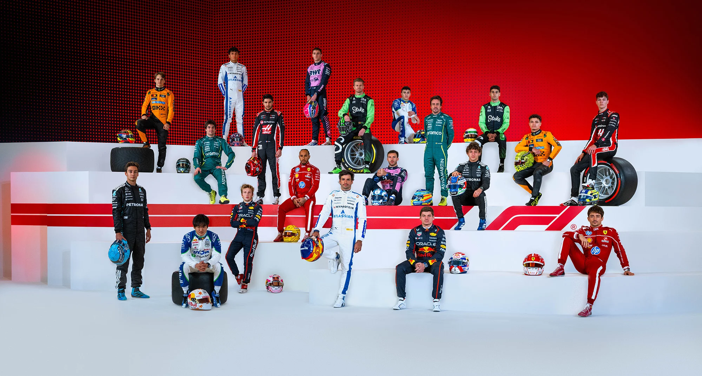

Pilotos
Conheça o grid da temporada 2026.
Ver pilotos
Acompanhe pilotos, equipes, corridas e a classificação da temporada 2026.
Explorar temporadaO Paddock 26 reúne as principais informações da temporada em um só lugar.
Conheça o grid da temporada 2026.
Ver pilotosConheça as equipes que disputam o campeonato.
Ver equipesAcompanhe todas as etapas da temporada.
Ver calendárioMarina Bay Street Circuit
Singapura
Ver detalhes da corrida